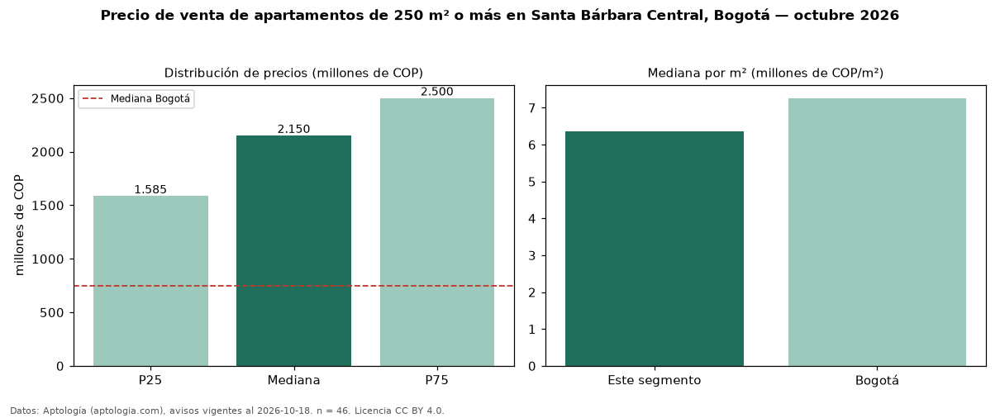

Precio de venta de apartamentos de 250 m² o más en Santa Bárbara Central, Bogotá — octubre 2026
COP 2,15 mil millones es el precio mediano de apartamentos de 250 m² o más en venta en Santa Bárbara Central (localidad de Usaquén), Bogotá (n = 46 avisos). Eso es 139 % más que la mediana de todos los apartamentos en venta de Santa Bárbara Central (COP 900 millones, n = 485); este segmento reúne el 9 % de esos avisos. Por metro cuadrado, la mediana es COP 6,37 millones/m² (n = 46), 7 % por debajo del conjunto de referencia (COP 6,82 millones/m²). El área mediana anunciada es 294 m². El segmento con más oferta es el de 3 o más habitaciones (46 avisos, mediana COP 2,15 mil millones). La administración mediana declarada es COP 1,98 millones al mes (n = 46). El estrato más frecuente es 6 (91 % de los avisos con estrato). La mediana de todos los apartamentos en venta de Bogotá es COP 750 millones (+187 % de diferencia). Datos: Aptología (aptologia.com), CC BY 4.0 — https://www.aptologia.com/venta/bogota/santa-barbara-central. Archivos: PDF, CSV con las cifras y gráfica PNG.

| Avisos únicos | 46 |
|---|---|
| Percentil 25 | COP 1.585.000.000 |
| Mediana | COP 2.150.000.000 |
| Percentil 75 | COP 2.500.000.000 |
| Mediana por m² | COP 6.370.316 |
Fuente: avisos vigentes de portales inmobiliarios recopilados por Aptología, deduplicados (mínimo 30 avisos únicos por celda). Precios pedidos, no cerrados. Fecha: 2026-10-18.